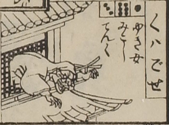

元興寺；ガゴゼ，男；オトコ

元興寺。顔は鬼のようである。頭から着物をかぶり、寺院のような建造物の上階の格子から身を乗り出している。
出典：親書誌：U426_nichibunken_0082：新版妖怪飛巡雙六；シンパンヨウカイトビマハリスゴロク／日付：2007／資源識別子：U426_nichibunken_0082_0025_0000
Copyright (c)2010- International Research Center for Japanese Studies, Kyoto, Japan. All rights reserved.